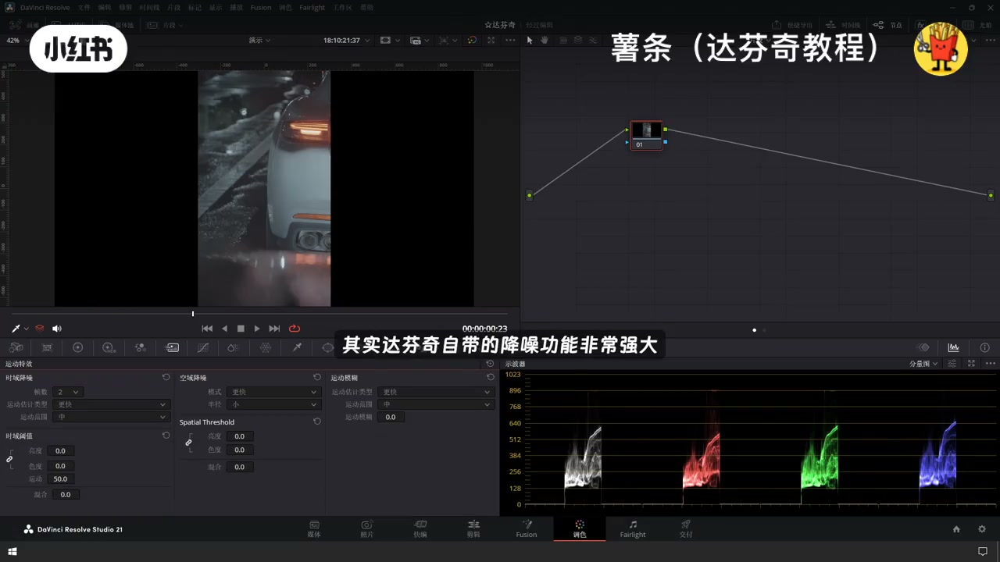
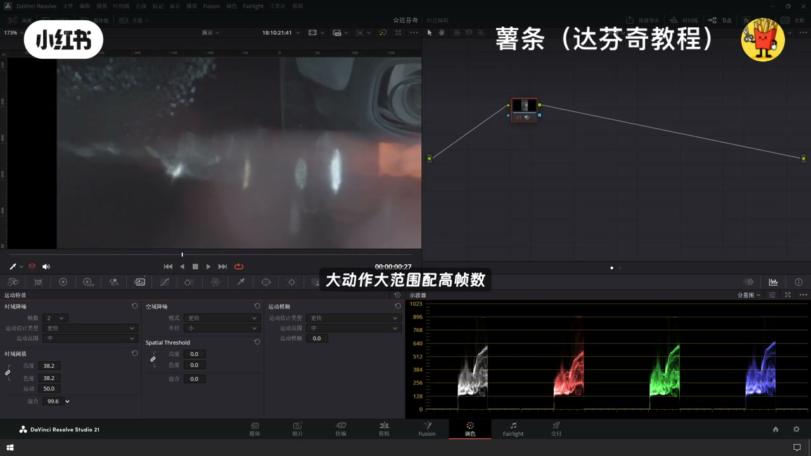
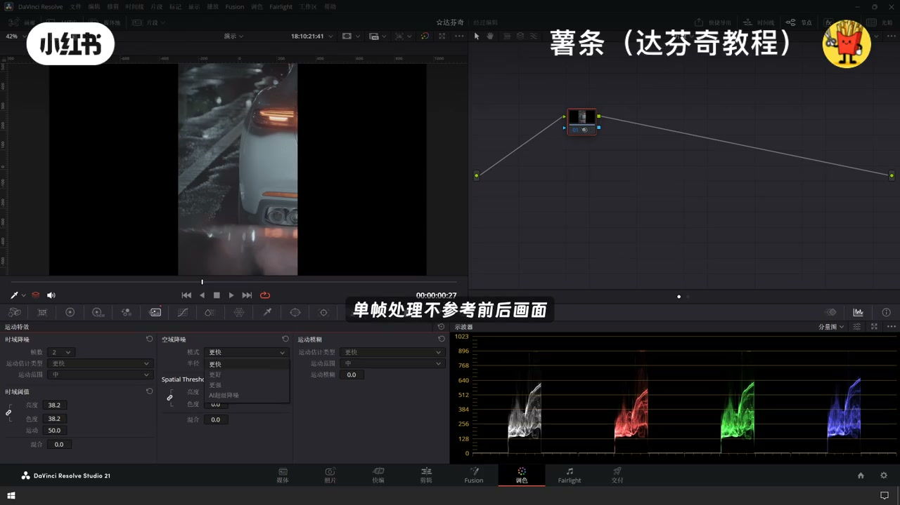
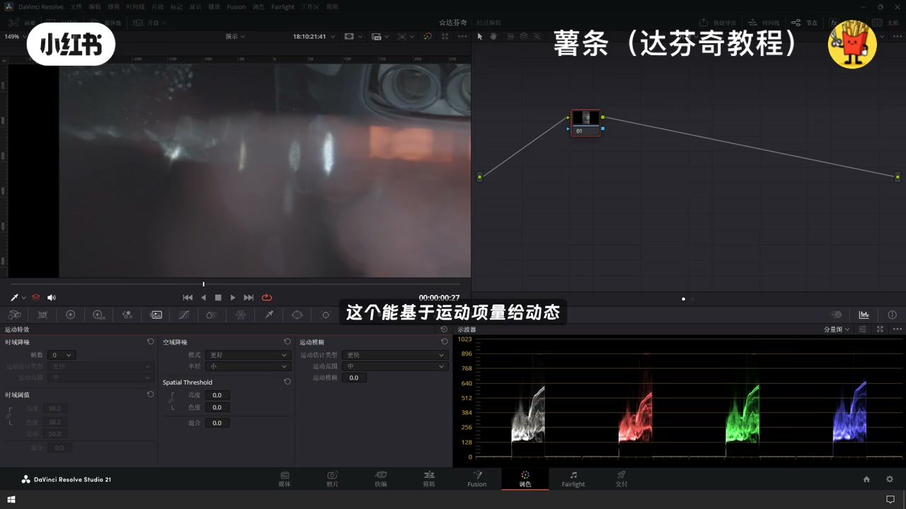
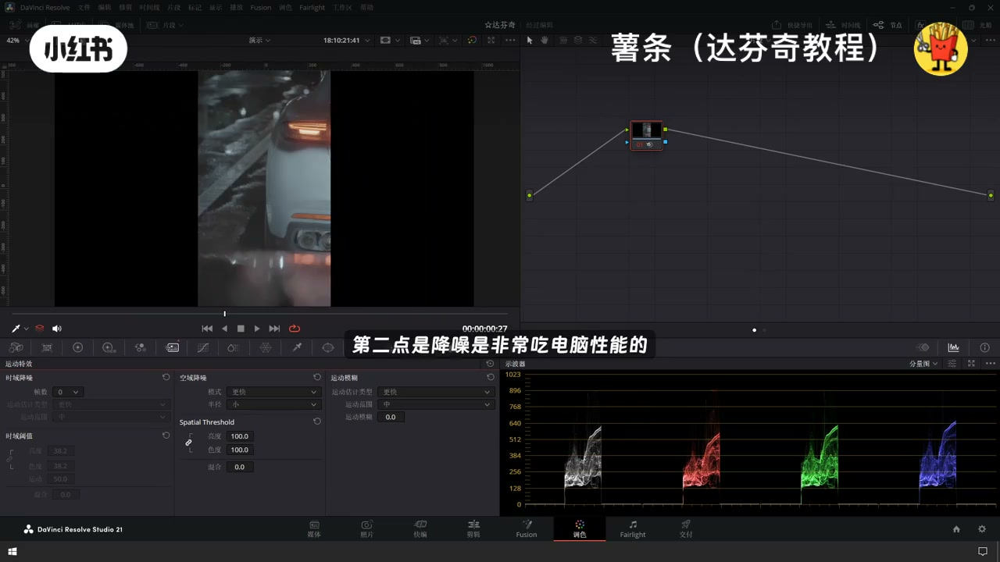

内容要点
「达芬奇视频降噪｜弱光素材救星✨Ai噪点去除」教程要点：一分钟教会你最新版本达芬奇降噪 → 很多人拍夜景落光素材满屏噪点 → 调色之后反而更难看 → 其实达芬奇自带的降噪功能非常强大…
知识结构
一分钟教会你最新版本达芬奇降噪
大动作大范围配高帧数
越靠后降噪效果就越好
- 一分钟教会你最新版本达芬奇降噪
- 很多人拍夜景落光素材满屏噪点
- 调色之后反而更难看
- 其实达芬奇自带的降噪功能非常强大
- 选对参数基本上能搞定绝大多数的噪点问题
一分钟教会你最新版本达芬奇降噪
00:00–00:39一分钟教会你最新版本达芬奇降噪
一分钟教会你最新版本达芬奇降噪；很多人拍夜景落光素材满屏噪点；调色之后反而更难看；其实达芬奇自带的降噪功能非常强大；选对参数基本上能搞定绝大多数的噪点问题；首先打开调色面面；切换到运动特效；里面一共有三个模块；时余降噪、空余降噪、运动模糊；先看时余降噪；时余参数是靠对比前后帧画面消暑噪点；帧数0-5帧可调；明就是不起用；运动估计类型分更快更好两档；要预览速度就选更快；要降噪精度就选更好；运动范围匹配画面动幅

00:38–01:20大动作大范围配高帧数
大动作大范围配高帧数；小动作小范围配低帧数；可以有效的避免拖影残影；预值分亮度和色度分别管明暗噪点和彩色噪点；可绑定同时调整也可拆分单独调整；运动参数控制运动的敏感度；默认值50；数值越高越能精准识别画面动态区域；最下方的混合滑块控制降噪整体强度；0就是完全生效；数值越大效果就越弱；再看空域降噪；只针对当前单帧处理不参考前后画面；优点是单帧画面干净；缺点是单独使用容易画面发虚；播放时噪点还会来回闪烁；模式分为更快更好加强还有AI降噪

01:22–02:03越靠后降噪效果就越好
越靠后降噪效果就越好；但是也是越吃电脑的性能；半径分大中小三档；剩下的是亮度色度和混合模块；逻辑和时域降噪是完全一致的；最后是很多人忽略的运动模糊模块；这个能基于运动向量；给动态画面添加自然的光学模糊；配合降噪一起使用；可以抵消降噪的生硬感；让画面更加的真实流畅；时超只需要记住两点核心就可以了；第一点是先打开时域降噪；效果不够再添加空域降噪；第二点是降噪是非常吃电脑性能的；平时预览的时候可以先关掉降噪节点；等到最终渲染早出的时候再打开



口述/画面要点（40段）
结合 Whisper medium 与画面大字整理；专有名词已校对。
一分钟教会你最新版本达芬奇降噪
很多人拍夜景落光素材满屏噪点
调色之后反而更难看
其实达芬奇自带的降噪功能非常强大
选对参数基本上能搞定绝大多数的噪点问题
首先打开调色面面
切换到运动特效
里面一共有三个模块
时余降噪、空余降噪、运动模糊
先看时余降噪
时余参数是靠对比前后帧画面消暑噪点
帧数0-5帧可调
明就是不起用
运动估计类型分更快更好两档
要预览速度就选更快
要降噪精度就选更好
运动范围匹配画面动幅
大动作大范围配高帧数
小动作小范围配低帧数
可以有效的避免拖影残影
预值分亮度和色度分别管明暗噪点和彩色噪点
可绑定同时调整也可拆分单独调整
运动参数控制运动的敏感度
默认值50
数值越高越能精准识别画面动态区域
最下方的混合滑块控制降噪整体强度
0就是完全生效
数值越大效果就越弱
再看空域降噪
只针对当前单帧处理不参考前后画面
优点是单帧画面干净
缺点是单独使用容易画面发虚
播放时噪点还会来回闪烁
模式分为更快更好加强还有AI降噪
越靠后降噪效果就越好
但是也是越吃电脑的性能
半径分大中小三档
剩下的是亮度色度和混合模块
逻辑和时域降噪是完全一致的
最后是很多人忽略的运动模糊模块